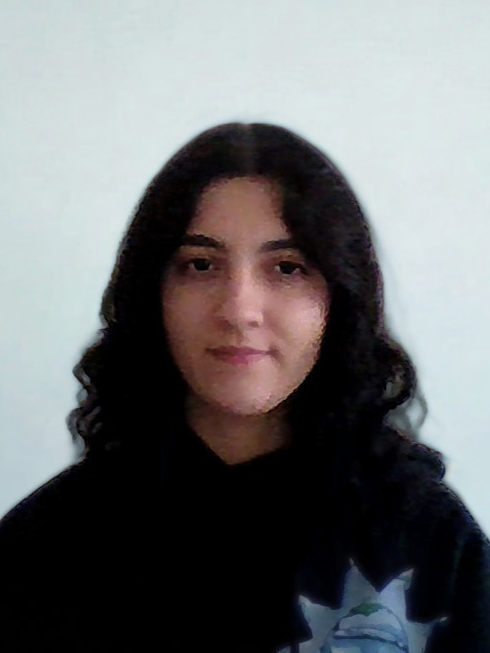
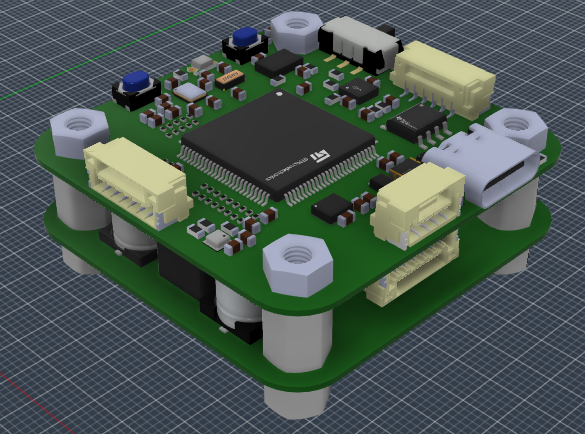
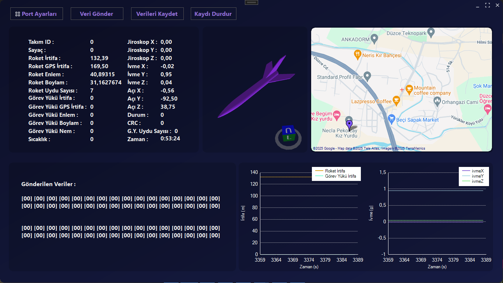

Gömülü sistemler, haberleşme ve aviyonik kart tasarımı üzerine çalışıyorum. STM32 ve Linux tabanlı gerçek zamanlı kontrol ve otonom sistemler geliştiriyorum.


Mekatronik mühendisliği öğrencisi olarak gömülü sistemler, aviyonik yazılımlar ve otonom robotik platformlar üzerine çalışıyorum. Odak noktam; gerçek zamanlı çalışan, sensör verisi işleyen ve sahada kullanılabilir sistemler geliştirmek.
Gömülü sistem tarafında kendi FCU + PDB kart tasarımımı geliştirerek PCB tasarımından firmware seviyesine kadar uçtan uca bir aviyonik mimari oluşturdum. Bunun yanında STM32 tabanlı gerçek zamanlı otopilot yazılımı üzerinde çalışıyor; sensör füzyonu, PID kontrol ve EKF tabanlı sistemler geliştiriyorum.
Otonom sistemler tarafında lidar tabanlı haritalama yapan rover, robotik kol entegrasyonu ve SLAM tabanlı navigasyon sistemleri üzerinde çalıştım. Ayrıca CubeSat projesi kapsamında ADCS, yer istasyonu haberleşmesi ve kartlar arası iletişim (CAN/UART/RF) sistemleri geliştiriyorum.